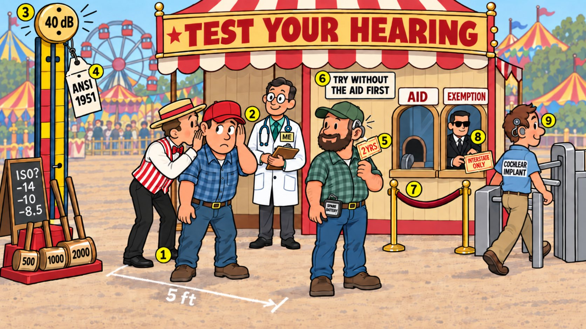

Card 3 of 13 · 49 CFR 391.41(b)(11)
The 5-Foot Whisper Booth
Hearing — the forced whisper, audiometry at 500/1,000/2,000 Hz, hearing aids, and the federal hearing exemption.

0:00 / 0:00
Press play — the narrator walks the scene and the spotlight follows to each numbered object. Click any paragraph to jump there. Space play/pause · ←/→ previous/next object · [/] previous/next card.
Not started — press play, then try the questions.
What this card covers
Hearing — the forced whisper, audiometry at 500/1,000/2,000 Hz, hearing aids, and the federal hearing exemption. Standard: 49 CFR 391.41(b)(11).
The hooks to keep
- Whisper at 5 feet, one ear at a time, from behind
- 40 dB average in the better ear
- ANSI 1951; subtract 14, 10, 8.5 if ISO
- Aid plus spare battery gets two years — try without it first
- Aid or exemption, never both
Test yourself
9 questions on this card
Answer each question to see the explanation, its sources, and the cheat-sheet entry.